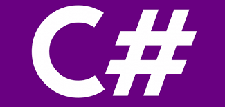

Python é uma linguagem de programação de alto nível — ou High Level Language —, dinâmica, interpretada, modular, multiplataforma e orientada a objetos.
Uma forma específica de organizar softwares onde, a grosso modo, os procedimentos estão submetidos às classes,
o que possibilita maior controle e estabilidade de códigos para projetos de grandes proporções.
Por ser uma linguagem de sintaxe relativamente simples e de fácil compreensão, ganhou popularidade
entre profissionais da indústria tecnológica que não são especificamente programadores, como engenheiros, matemáticos, cientistas de dados, pesquisadores e outros.
Um de seus maiores atrativos é possuir um grande número de bibliotecas, nativas e de terceiros,
tornando-a muito difundida e útil em uma grande variedade de setores dentro de desenvolvimento web, e também em áreas como análise de dados, machine learning e IA.

O C# é uma linguagem de programação moderna, orientada a objeto e de tipo seguro.
O C# permite que os desenvolvedores criem muitos tipos de aplicativos seguros e robustos que são executados no .NET.
O C# tem suas raízes na família de linguagens C e os programadores em C, C++, Java e JavaScript a reconhecerão imediatamente.
R é uma linguagem de programação amplamente utilizada por cientistas de dados e grandes corporações como Google, Airbnb, Facebook etc.
para análise de dados, análise estatística, representação gráfica e relatórios.
Ela foi criada e desenvolvida pela primeira vez por Ross Ihaka e Robert Gentleman na Universidade de Auckland, Nova Zelândia em 1993.
Atualmente é considerada uma das melhores ferramentas para programadores de software,
estatísticos e mineradores de dados que desejam manipular facilmente e apresentar os dados de maneira rápida e agradável.
Java é uma linguagem de programação e plataforma computacional lançada pela primeira vez pela Sun Microsystems em 1995.
Existem muitas aplicações e sites que não funcionarão, a menos que você tenha o Java instalado, e mais desses são criados todos os dias.
O Java é rápido, seguro e confiável.
De laptops a datacenters, consoles de games a supercomputadores científicos, telefones celulares à Internet, o Java está em todos os lugares!